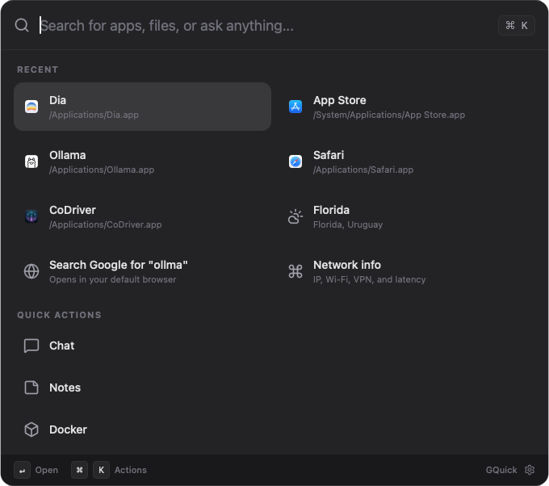

Spotlight for your desktop
Launch apps, search files, run commands, chat with AI — all from one shortcut.

Everything you need
One launcher. Twelve plugins. Zero friction.
App Launcher
Launch any application instantly. Scans your system for installed apps across all platforms.
File Search
Find files and folders by name. AI-powered smart search reads file contents for relevance.
Calculator
Evaluate math expressions directly in the search bar. No app switch needed.
Docker Manager
List, start, stop containers. Search Docker Hub. Manage Compose projects.
Web Search
Quick Google searches opened in your default browser. Type and go.
Translate
Instant AI-powered translation. Type t: <text> for quick translate without opening a UI.
Weather
Current conditions and 7-day forecast. Type /wt <city> for instant weather.
Speedtest
Measure latency, download, and upload speed via Cloudflare endpoints.
Network Info
View local IP, public IP, Wi-Fi SSID, VPN status, and latency at a glance.
Notes
Quick note capture with note: <content>. Search and browse all your notes.
Terminal
Run shell commands directly from the launcher. Type > <command>.
Screenshot & OCR
Capture screen regions. Extract text from any area with AI-powered OCR.
Keyboard-first by design
Every action is a keystroke away. All shortcuts are freely configurable in Settings.
Global Shortcuts
In-App Shortcuts
Download GQuick
Get the latest release from GitHub. Pick the asset for your operating system there.
Latest GitHub release
GitHub shows the newest GQuick version and all available installer assets for macOS, Windows, and Linux.
Open latest release